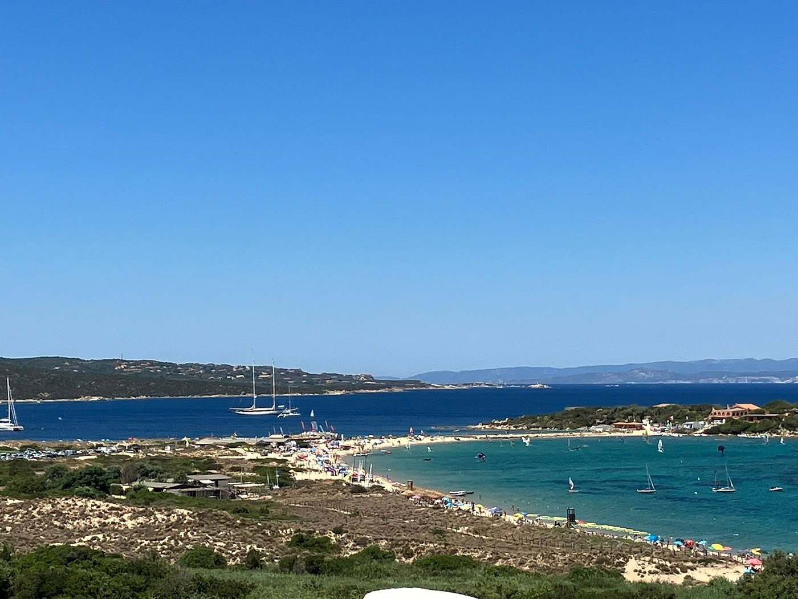

Porto Pollo e il Borgo
A 300 metri dal mare · Sardegna, Costa Smeralda
Porto Pollo e il Borgo
Porto Pollo è una delle località più amate della Gallura per il suo mare e per il vento, che la rende un punto di riferimento per windsurf e kitesurf. Da qui puoi raggiungere in pochi minuti Palau e l'Arcipelago di La Maddalena, oltre alle spiagge e alle calette della Gallura e della Costa Smeralda.
Le nostre case si trovano al Borgo, un centro turistico residenziale di case in pietra sarda, immerso nella macchia mediterranea e a 300 metri dal mare.


La Baia dei Delfini
A due passi dalle nostre case si apre la Baia dei Delfini: una lunga spiaggia di sabbia chiara con un mare dalle sfumature turchesi, dune naturali attraversate da passerelle in legno e il profilo dell'Arcipelago di La Maddalena all'orizzonte. Il vento costante la rende un luogo molto amato da chi pratica windsurf e kitesurf, ma è anche un posto perfetto per rilassarsi, fare il bagno e godersi il tramonto.


Dove siamo
Il Borgo sorge a Porto Pollo, in Gallura, all'interno dell'area protetta del Parco Nazionale dell'Arcipelago di La Maddalena, uno dei tratti di costa e di mare più preziosi del Mediterraneo.
Case in pietra sarda si inseriscono con discrezione nella macchia mediterranea, tra viottoli, piazzette e giardini. Il mare dista appena 300 metri e la Baia dei Delfini si raggiunge a piedi: una vacanza fatta di quiete, vento e luce.
Da qui Palau e il porto per le isole dell'Arcipelago sono a pochi minuti, mentre le spiagge della Gallura e della Costa Smeralda sono tutte a portata di auto. Un angolo di pace per chi cerca una Sardegna vera, lontana dalla folla.
Come arrivare
Dall'aeroporto di Olbia
Dall'aeroporto di Olbia Costa Smeralda segui le indicazioni per Arzachena e Palau lungo la SS125 (Orientale Sarda). Superata Palau, prosegui sulla SS133bis in direzione Santa Teresa Gallura e svolta per Porto Pollo. Il viaggio dura circa 50 minuti.
Dal porto di Olbia
Dal porto di Olbia (Isola Bianca) imbocca la circonvallazione in direzione Arzachena e prosegui sulla SS125 fino a Palau, poi come indicato per l'aeroporto. Il viaggio dura circa 50 minuti.
Dal porto di Porto Torres
Dal porto di Porto Torres segui la SS131 fino a Sassari, poi la superstrada Sassari–Olbia. Arrivato a Olbia, prosegui verso Arzachena e Palau come indicato sopra. Il viaggio dura circa 2 ore e 15 minuti.
Traghetti scontati con Traghettilines
Sconti fino a -30%. Il codice dedicato ti sarà fornito al momento della prenotazione.
Prenota